El Origen
776 a.C.
Los Juegos Olímpicos surgieron como uno de los principales festivales atléticos del mundo griego antiguo, junto con los juegos Ístmicos, Nemeos y Píticos. Estos eventos reunían periódicamente a atletas provenientes de distintas polis, quienes competían en disciplinas como carreras, pentatlón y combates. Con el tiempo, los Juegos de Olimpia adquirieron un lugar central dentro de este sistema panhelénico, convirtiéndose en el punto de encuentro más prestigioso del calendario atlético griego. Las victorias se registraban en listas conocidas como Olympionikai, que preservaban la memoria de los vencedores y funcionaban también como una referencia cronológica para el mundo griego.
Christesen · Cambridge Companion to the Olympics, 2007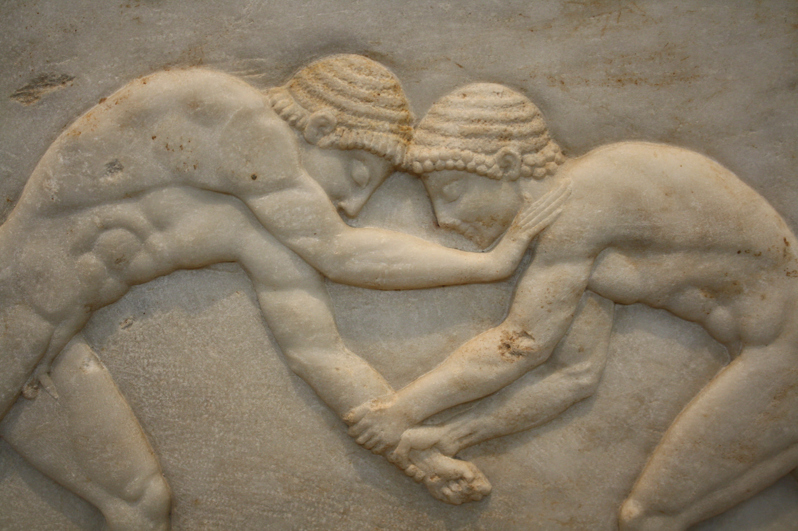
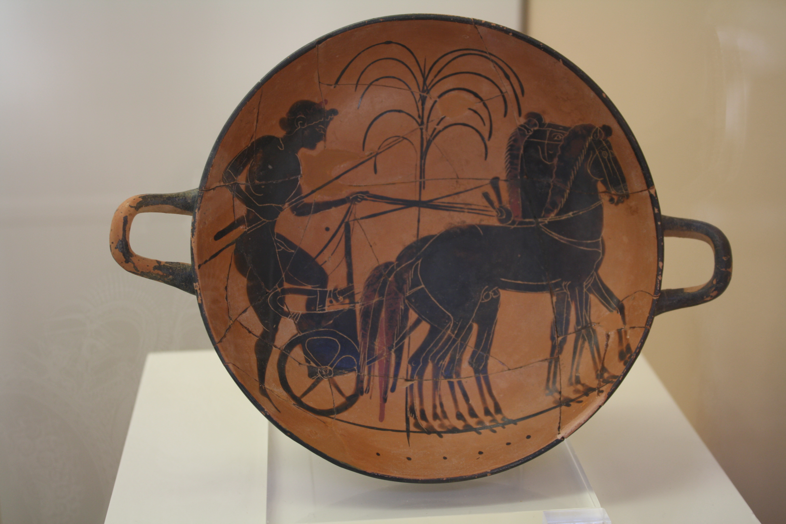
El significado de la victoria olímpica iba mucho más allá del reconocimiento deportivo. Los vencedores no recibían premios materiales, sino una sencilla corona de olivo conocida como kotinos. Aunque carecía de valor monetario, esta corona representaba uno de los mayores honores para un atleta: simbolizaba la gloria, el prestigio público y el favor de los dioses. La obtención del kotinos era el momento culminante de los Juegos y convertía a los vencedores en figuras admiradas dentro de todo el mundo griego.
Karaiskakis · 2024La elaboración y entrega de la corona formaban parte de un ritual profundamente simbólico. Los jueces —Hellanodikai— cortaban ramas del olivo sagrado de Olimpia con una hoz de oro y tejían las coronas que serían otorgadas a los campeones. La ceremonia tenía lugar en el santuario de Zeus, reforzando la dimensión religiosa del evento. El propio olivo tenía una fuerte carga cultural: según la mitología, había sido un regalo de Atenea a Atenas, representando sabiduría, paz y prosperidad.
Karaiskakis · 2024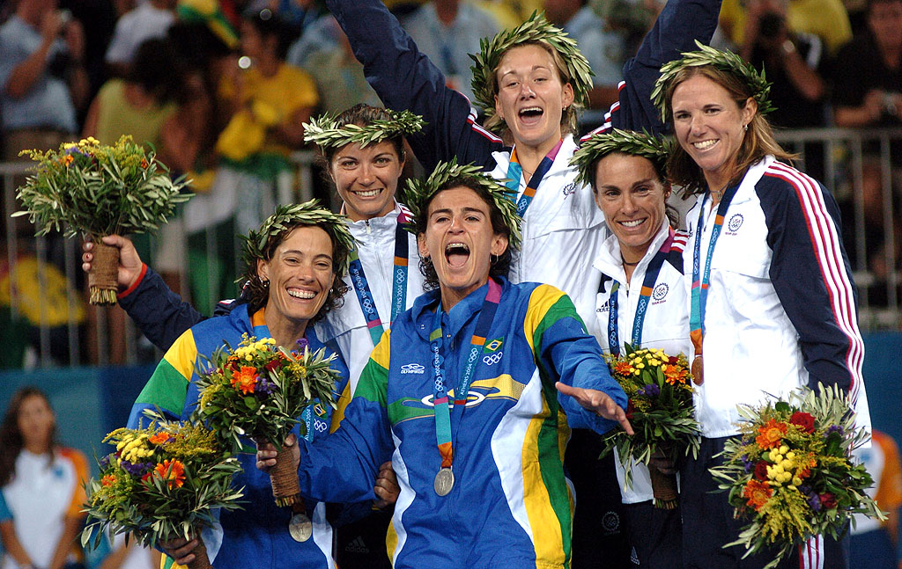
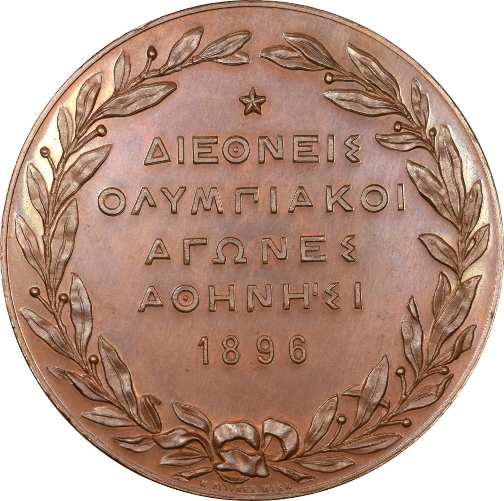
Con el tiempo, el simbolismo de la victoria olímpica evolucionó, pero no desapareció. En los Juegos modernos, inaugurados en 1896, las coronas fueron reemplazadas por medallas que adoptaron el sistema actual de oro, plata y bronce. Aun así, muchos elementos simbólicos del olimpismo antiguo permanecen: la diosa Nike sigue apareciendo en las medallas y el olivo continúa presente en emblemas y ceremonias. Desde su origen, los Juegos han funcionado como un escenario para proyectar prestigio, identidad y reconocimiento ante una audiencia cada vez más amplia.
Suddath · 2008Desde su origen, los Juegos Olímpicos han sido más que una competición deportiva: un escenario donde proyectar prestigio, identidad y poder ante el mundo.
Con la reaparición de los Juegos en la era moderna, este escenario simbólico heredado de la Grecia antigua adquirió una dimensión completamente nueva. Si en Olimpia la victoria representaba prestigio individual y honor colectivo dentro del mundo griego, en el siglo XX los Juegos comenzaron a convertirse en una plataforma internacional donde los Estados podían proyectar poder, identidad nacional e influencia política ante una audiencia global. A medida que el olimpismo crecía en alcance mediático y diplomático, los gobiernos comprendieron su potencial como herramienta de propaganda y legitimación. Esta transformación se hizo especialmente evidente en los Juegos Olímpicos de Berlín 1936, donde el régimen nazi utilizó el evento para proyectar una imagen de fortaleza, modernidad y superioridad ideológica ante el mundo.
Propaganda y Espectáculo
1936
Los Juegos Olímpicos de Berlín de 1936 marcaron un punto de inflexión en la relación entre deporte y política. Cuando el régimen nazi llegó al poder en 1933, comprendió rápidamente el potencial del deporte como herramienta de proyección ideológica. El gobierno de Hitler reorganizó las instituciones deportivas alemanas dentro del proceso de Gleichschaltung —coordinación política—, integrando el deporte en la estructura del Estado y alineándolo con la ideología racial nazi. Los Juegos Olímpicos ofrecían la oportunidad única de presentar al mundo una imagen de fortaleza nacional y de supuesta superioridad "aria" a través del espectáculo deportivo.
Cody · 2016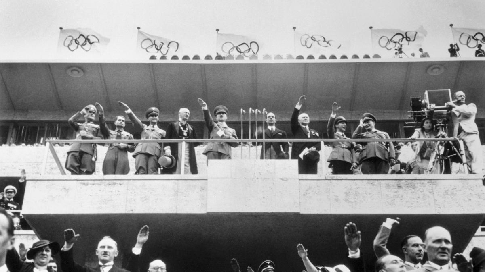
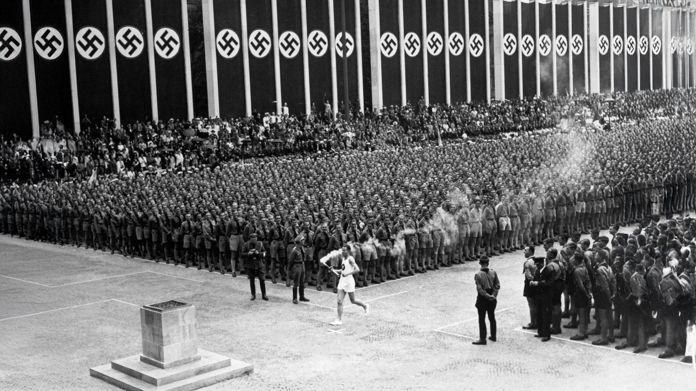
Para lograrlo, el régimen desplegó una maquinaria propagandística sin precedentes. Las autoridades nazis invirtieron enormes recursos en la construcción de instalaciones monumentales y en la organización de unos Juegos que superaran cualquier edición anterior. La ceremonia de apertura incluyó el relevo de la antorcha desde Olimpia hasta Berlín, reforzando simbólicamente la conexión entre la Alemania nazi y la herencia de la antigua Grecia. A través de carteles, publicaciones y cobertura mediática internacional, el régimen promovió una narrativa que vinculaba el ideal atlético clásico con el mito racial de una supuesta civilización aria heredera de la cultura griega.
United States Holocaust Memorial Museum · 2025El mensaje también se amplificó mediante el cine. El régimen encargó a la cineasta Leni Riefenstahl la producción de Olympia, un documental que celebraba la estética del cuerpo atlético y el espectáculo de los Juegos, reforzando visualmente los ideales raciales y nacionalistas del régimen. Estas producciones, junto con una cobertura mediática controlada, transformaron los Juegos en una vitrina global del Tercer Reich, capaz de influir en la percepción internacional de Alemania.
Cody · 2016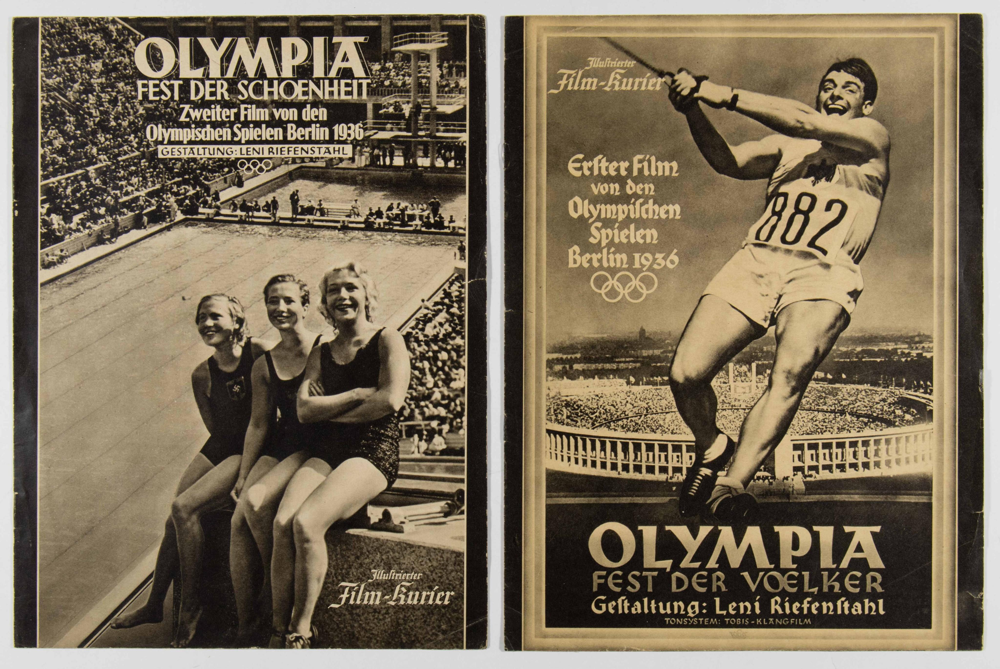
Los Juegos de 1936 demostraron cómo el escenario olímpico podía convertirse en una poderosa herramienta de propaganda política a escala internacional.
Sin embargo, esta imagen cuidadosamente construida ocultaba una realidad muy distinta. Durante los Juegos, el régimen moderó temporalmente algunas de sus manifestaciones más visibles de antisemitismo para evitar críticas internacionales, mientras continuaba excluyendo y persiguiendo a atletas judíos. Muchos visitantes extranjeros interpretaron los Juegos como una señal de normalidad y modernidad alemana, sin percibir que la hospitalidad y el espectáculo formaban parte de una estrategia propagandística destinada a legitimar al régimen ante el mundo. Una vez finalizados los Juegos, la persecución se intensificó y las ambiciones expansionistas del régimen se hicieron cada vez más evidentes.
Redención y Modernidad
1964
Si Berlín 1936 mostró cómo los Juegos podían utilizarse como propaganda política, Tokio 1964 representó una transformación significativa en el uso del escenario olímpico. Para Japón, los Juegos constituían mucho más que un evento deportivo: eran la primera gran oportunidad de presentarse nuevamente ante el mundo tras la devastación y el estigma internacional que dejó la Segunda Guerra Mundial. El gobierno japonés entendió que los Juegos podían servir como una plataforma para redefinir la identidad del país, proyectando una imagen de estabilidad, modernidad y cooperación internacional.
Tagsold · 2020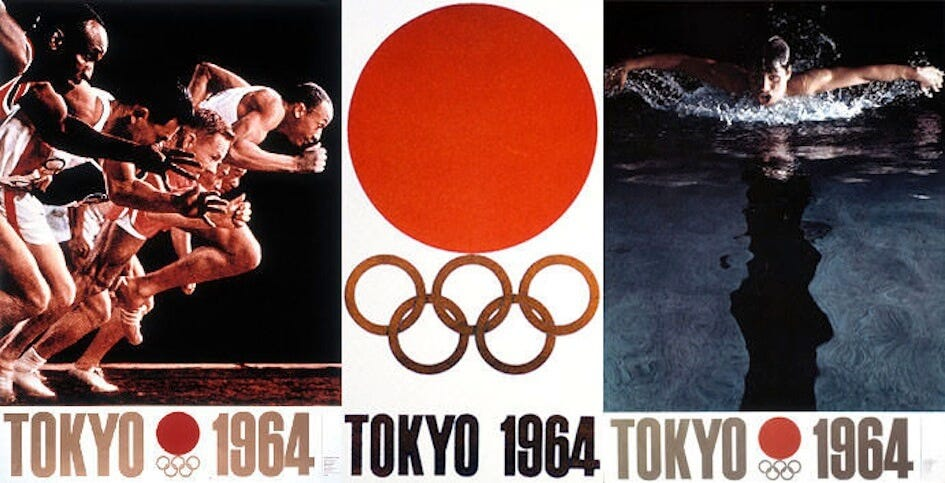

Con este objetivo, Japón emprendió un ambicioso proceso de modernización urbana y tecnológica. El Shinkansen, la expansión del sistema de transporte y la construcción de instalaciones deportivas con arquitectura futurista fueron concebidas no solo para albergar el evento, sino también para comunicar una visión de Japón como una nación avanzada y orientada hacia el futuro. A diferencia de la propaganda explícita del régimen nazi, aquí la estrategia se basó en mostrar progreso, innovación y eficiencia como símbolos de una nueva identidad nacional.
Tagsold · 2020Los Juegos sirvieron también para transmitir un mensaje político más amplio: el paso de Japón de potencia militar a nación comprometida con la paz internacional. En el contexto de la Guerra Fría, el país buscó proyectarse como un actor moderado y cooperativo. Gestos simbólicos como las ceremonias relacionadas con el Hiroshima Peace Memorial y el énfasis en la reconstrucción pacífica reforzaron esta narrativa, presentando a Japón como una sociedad que había dejado atrás el militarismo y que aspiraba a liderar un futuro basado en el desarrollo tecnológico y la cooperación global.
Honda · 2019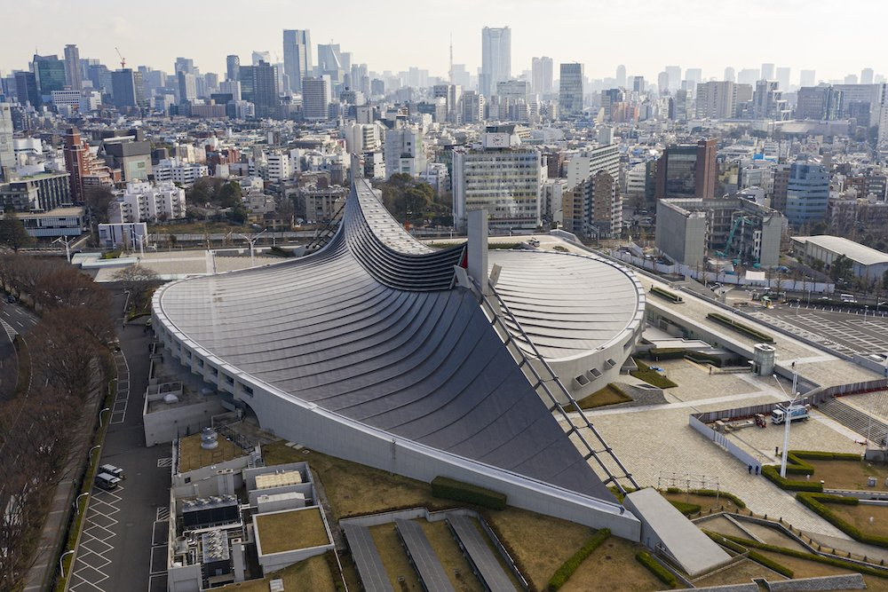
Tokio 1964 marcó un momento clave en la evolución del uso político de los Juegos: ya no se trataba únicamente de propaganda directa, sino de una estrategia más sutil de influencia internacional basada en imagen, innovación y prestigio.
Los Juegos de 1964 no solo transformaron la infraestructura y la economía del país, sino que también redefinieron su percepción internacional. Japón pasó de ser asociado con la guerra y el expansionismo a convertirse en un símbolo de modernidad tecnológica, crecimiento económico y cultura contemporánea. Lo que Tokio demostró es que el soft power olímpico podía ejercerse sin necesidad de propaganda explícita, simplemente dejando que el espectáculo hablara por sí mismo.
La Vitrina y la Masacre
1968
Tokio 1964 mostró el uso de los Juegos para reconstruir una imagen nacional. México 1968 reveló con especial claridad el costo político de esa operación. El Estado mexicano concibió la Olimpiada como el escaparate más ambicioso del llamado "milagro mexicano": una oportunidad para exhibir a México como un país moderno, pacífico, culturalmente sofisticado y plenamente integrado al mundo desarrollado. Esa narrativa se condensó en el lema "Todo es posible en la paz", con el que el gobierno intentó proyectar una identidad de armonía, apertura y progreso.
Castañeda · 2014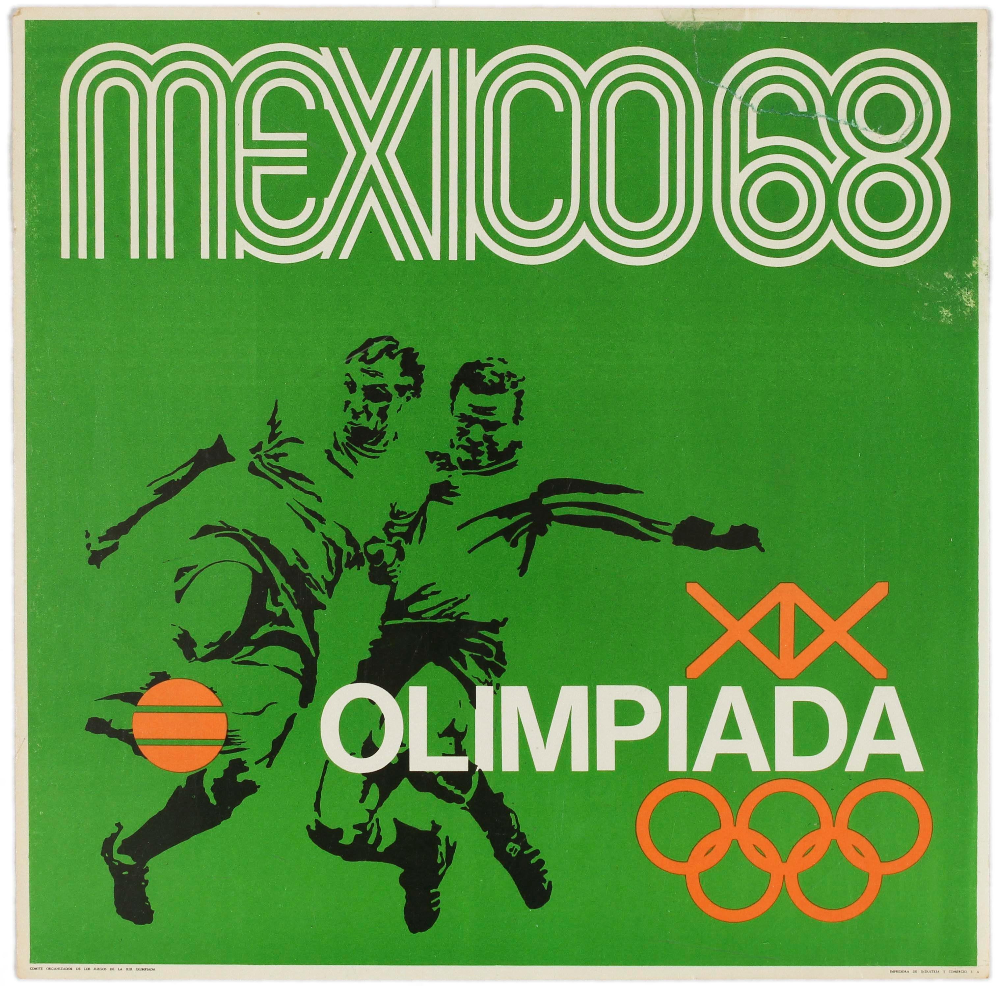
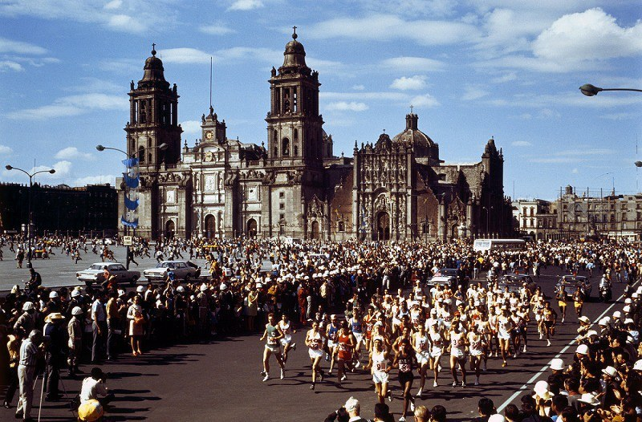
Esa imagen no se construyó solo con discursos, sino con una maquinaria visual y urbana muy calculada. La Olimpiada incluyó una Cultural Olympiad, un sistema gráfico internacionalmente atractivo, intervenciones urbanas, arquitectura moderna y una cuidadosa selección de los espacios que debían ser vistos. El objetivo era mostrar un México moderno y cosmopolita, mientras se ocultaban las fracturas sociales y las zonas menos convenientes de la ciudad. Los Juegos funcionaron como una vitrina diseñada para volver visible un país deseado e invisible un país conflictivo.
Castañeda · 2014Esa escenografía coincidió con un contexto de creciente protesta social. El movimiento estudiantil de 1968 fue la culminación de años de autoritarismo, intervenciones militares en universidades y represión de movilizaciones sociales. A medida que se acercaba la inauguración y llegaban periodistas internacionales para la primera transmisión satelital de unos Juegos Olímpicos, las protestas comenzaron a amenazar directamente la imagen que el gobierno quería exportar. Diez días antes de la apertura, la matanza de Tlatelolco buscó sofocar el conflicto de un golpe para preservar, ante el mundo, la ficción de orden y paz.
Nájar · 2023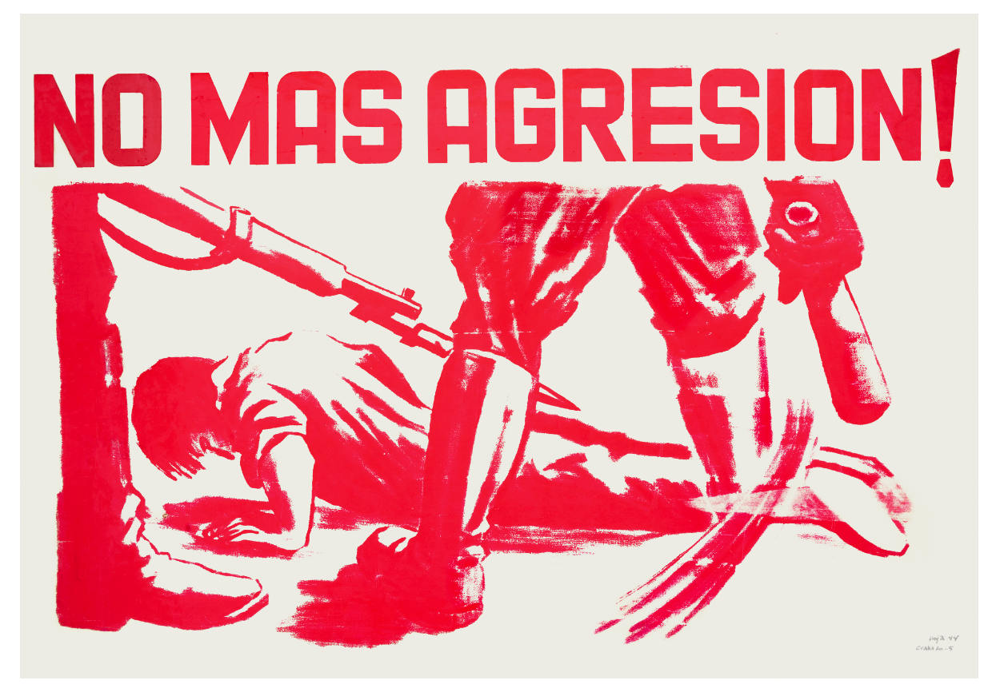
México 1968 demostró que la proyección internacional podía depender de la represión interna.
Si Berlín 1936 había mostrado la Olimpiada como propaganda autoritaria directa, México 1968 mostró una variante más compleja: un lenguaje moderno, cultural y visualmente seductor, capaz de proyectar prestigio global mientras ocultaba la violencia sobre la que descansaba. No fue solo una celebración deportiva, sino una operación de imagen sostenida por diseño, arquitectura, medios y control del espacio público.
Boicot y Propaganda
1980
Para 1980, los Juegos Olímpicos ya se habían consolidado como un escenario clave de competencia simbólica entre Estados. En plena Guerra Fría, la Olimpiada de Moscú fue concebida por la Unión Soviética como una oportunidad para demostrar la superioridad de su sistema político y social frente al mundo occidental. El deporte ocupaba un lugar central en la estrategia internacional soviética: las victorias atléticas eran interpretadas como prueba del éxito del modelo socialista y como una forma de prestigio internacional que trascendía el ámbito deportivo.
White · 2022
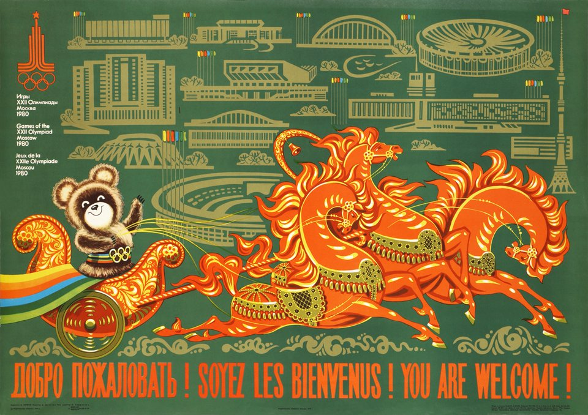
Esa estrategia se vio profundamente alterada por el contexto geopolítico. Tras la invasión soviética de Afganistán en 1979, Estados Unidos y varios aliados promovieron un boicot a los Juegos de Moscú. Este boicot se convirtió en una herramienta de confrontación política dentro de la Guerra Fría, utilizando el deporte como un medio para disputar legitimidad internacional sin recurrir a la confrontación militar directa. Frente a esta situación, el gobierno soviético respondió con Misha, el osito mascota diseñado por Viktor Chizhikov, destinado a suavizar la imagen internacional de la URSS y presentar un rostro más cercano y humano del país anfitrión.
Corthorn · 2025 — Brown · 2013El personaje fue utilizado en una extensa campaña cultural y comercial que incluyó dibujos animados, juguetes y productos de merchandising. Su objetivo era asociar la URSS con ternura y accesibilidad, contrarrestando la imagen de autoritarismo y militarismo que dominaba la percepción occidental. La clausura de los Juegos, en la que Misha se despidió ante el estadio en una emotiva secuencia, se convirtió en uno de los momentos más recordados de la historia olímpica.
Brown · 2013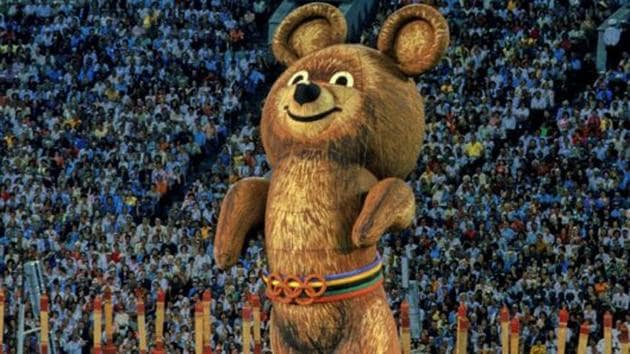
Moscú 1980 mostró cómo el escenario olímpico podía ser simultáneamente una plataforma de prestigio y un campo de batalla simbólico.
El boicot liderado por Estados Unidos redujo significativamente la participación de países occidentales y transformó los Juegos en un episodio más de la confrontación ideológica entre bloques. El evento confirmó que la influencia internacional no solo se construía mediante propaganda o modernización, sino también a través de gestos diplomáticos, boicots y estrategias culturales que buscaban moldear la opinión pública mundial.
El Olimpismo Corporativo
1984
Si Moscú 1980 mostró que los Juegos podían convertirse en un campo de disputa simbólica entre superpotencias, Los Ángeles 1984 marcó un giro distinto: el olimpismo pasó a funcionar también como una vitrina del capitalismo estadounidense y su capacidad de convertir el deporte en un espectáculo global rentable. En pleno contexto de Guerra Fría y tras el boicot estadounidense a Moscú 1980, el evento fue presentado como una oportunidad para proyectar una imagen optimista y poderosa de Estados Unidos hacia el mundo. Los Juegos funcionaron no solo como un evento deportivo, sino como una plataforma para exportar una narrativa de éxito económico, modernidad y liderazgo cultural.
Lieser · 2014

Una de las principales innovaciones fue su modelo económico. Después del enorme endeudamiento de Montreal 1976 y de la crisis financiera del movimiento olímpico, Los Ángeles organizó los primeros Juegos financiados principalmente por capital privado. Bajo el liderazgo de Peter Ueberroth, el comité organizador impulsó acuerdos de patrocinio corporativo y grandes contratos televisivos que transformaron radicalmente la economía del olimpismo. Este modelo generó un superávit de más de 200 millones de dólares y consolidó el papel del marketing deportivo global, inaugurando una nueva etapa en la relación entre los Juegos Olímpicos, las empresas y los medios de comunicación.
Woodward · 2004La proyección de esa narrativa también se construyó visualmente. El lenguaje gráfico de los Juegos, con estructuras temporales, colores intensos y una iconografía festiva, creó una estética reconocible que unificó una ciudad dispersa y la volvió especialmente atractiva para la televisión global. El diseño utilizó colores brillantes y estructuras ligeras para crear una atmósfera optimista que reflejaba la diversidad cultural de Los Ángeles y reforzaba la imagen de una sociedad abierta y dinámica.
Morgan · 2021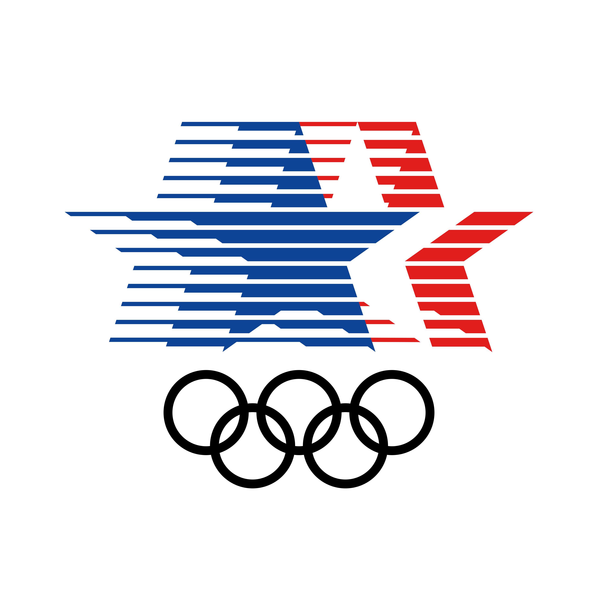
Los Ángeles 1984 inauguró una nueva etapa en la que el espectáculo mediático y el marketing reemplazaron a la propaganda estatal como principal instrumento de soft power olímpico.
Sin embargo, esa imagen ocultaba tensiones reales. La representación de Los Ángeles como una ciudad multicultural y armoniosa contrastaba con problemas de desigualdad, tensiones raciales y políticas de control urbano que acompañaron la preparación del evento. Los Juegos de 1984 ilustran así un cambio clave en la historia olímpica: el uso del evento como instrumento de influencia internacional ya no dependía únicamente de la propaganda estatal directa, sino también de la capacidad del espectáculo mediático, el diseño urbano y el marketing para proyectar una imagen nacional atractiva a escala global.
Del Autoritarismo al Escenario Global
1988
Los Juegos Olímpicos de Seúl 1988 representaron un momento decisivo en la historia contemporánea de Corea del Sur y en la evolución política del olimpismo. Para el país, el evento fue una oportunidad para proyectarse ante el mundo como una nación moderna y económicamente dinámica, dejando atrás la imagen de un Estado marcado por la guerra y la inestabilidad política. La decisión de organizar los Juegos respondió a una estrategia consciente de prestigio internacional iniciada décadas antes, cuando el gobierno surcoreano buscó seguir el ejemplo de Japón en 1964 y utilizar el olimpismo como vitrina de desarrollo nacional.
O'Neill · 2022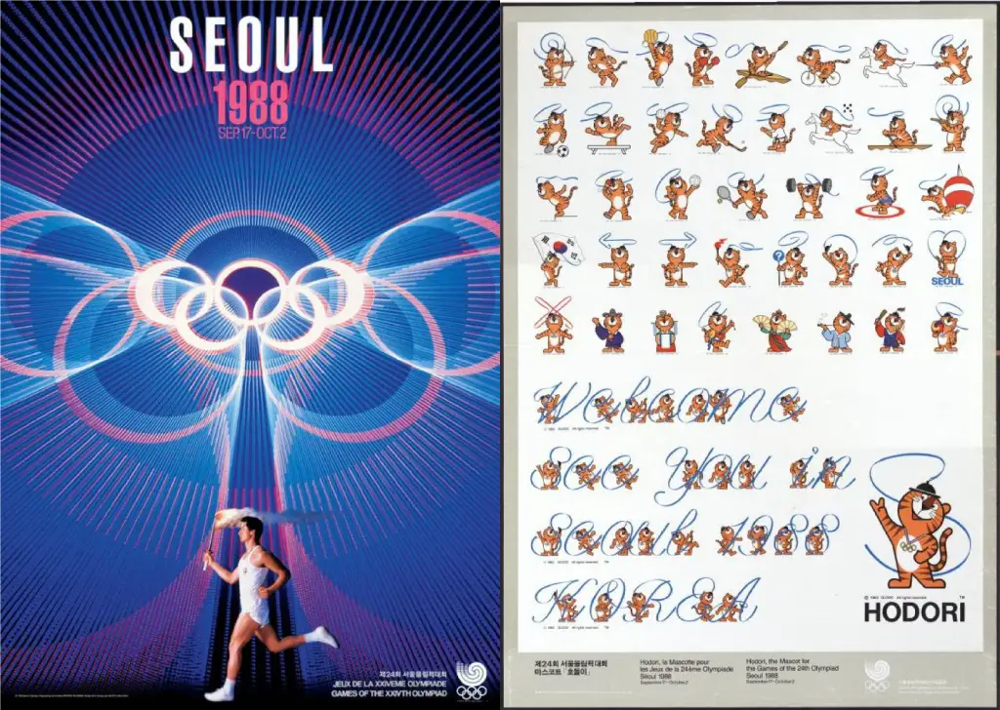
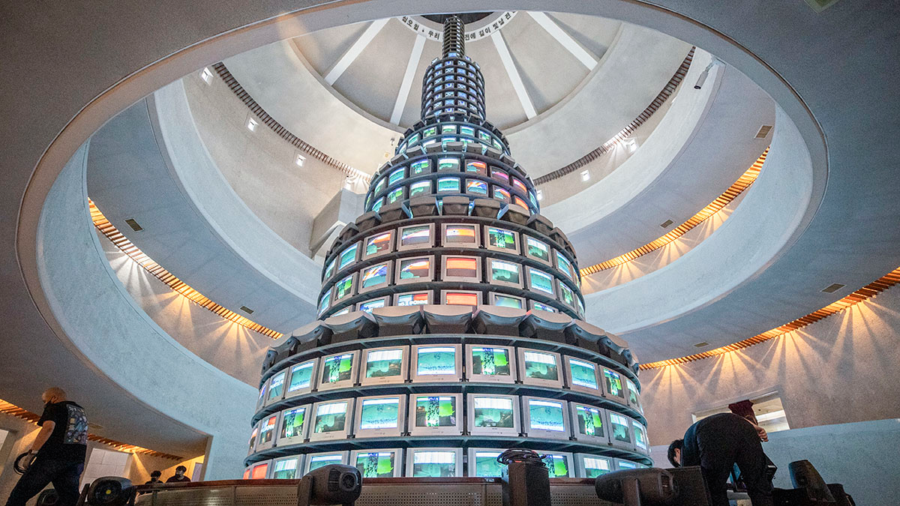
La preparación del evento implicó una transformación urbana y simbólica profunda. En pocos años, Seúl experimentó una modernización acelerada con nuevas avenidas, líneas de metro, parques, estadios y espacios culturales que buscaban presentar una capital moderna y organizada ante los visitantes internacionales. Esta renovación también se expresó en el plano cultural y visual, donde el lema "Seoul to the World, the World to Seoul", la mascota Hodori y la canción Hand in Hand proyectaron una imagen de Corea abierta, optimista y culturalmente reconocible en el escenario global.
Goodman · 2025El contexto político dio a estos Juegos un significado aún mayor. Durante la década de 1980 Corea del Sur vivía intensas protestas democráticas contra el régimen autoritario. La proximidad de los Juegos y la presión internacional limitaron el uso de la represión estatal y contribuyeron a las reformas que culminaron en la adopción de elecciones presidenciales directas en 1987. De esta manera, el evento no solo sirvió como vitrina internacional, sino también como catalizador de un proceso de transición política. Después de los boicots de Moscú 1980 y Los Ángeles 1984, la participación de 159 países convirtió a la Olimpiada en un símbolo de apertura internacional y reconocimiento diplomático para Corea del Sur.
O'Neill · 2022 — Goodman · 2025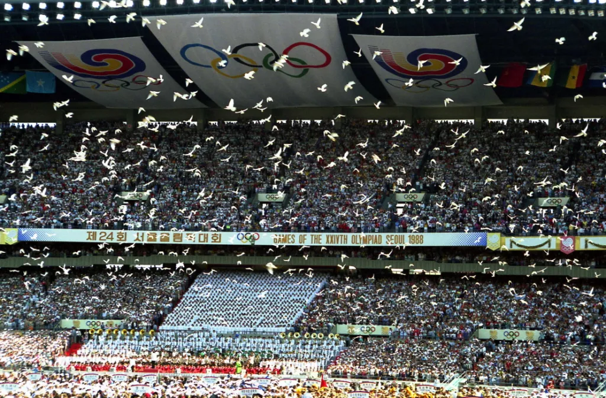
Seúl 1988 demostró que los Juegos Olímpicos podían funcionar como una herramienta capaz de reposicionar a un país en el sistema internacional y de proyectar una nueva identidad nacional ante el mundo.
En ese sentido, Seúl representa la culminación de un ciclo que comenzó en Tokio 1964: el uso del olimpismo como plataforma de legitimación internacional para economías emergentes con ambiciones de protagonismo global. Lo que siguió a partir de los años noventa fue una nueva fase, en la que potencias ya consolidadas utilizarían los Juegos no para entrar al sistema internacional, sino para redefinir su lugar dentro de él.
El Sueño Centenario
2008
Los Juegos Olímpicos de Pekín 2008 representaron un momento clave en la estrategia internacional de China. A diferencia de Seúl 1988, donde los Juegos ayudaban a anunciar una transformación, en Pekín el objetivo era demostrar que China ya se había consolidado como potencia global. El evento fue presentado como una oportunidad para fortalecer su soft power, aumentar su atractivo internacional y obtener un reconocimiento más amplio como actor central del orden mundial. Los Juegos funcionaron como la puesta en escena de un sueño centenario de prestigio, aceptación y pertenencia plena a la comunidad internacional.
Zhongying · 2008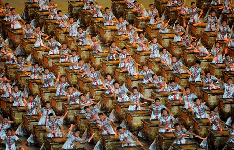
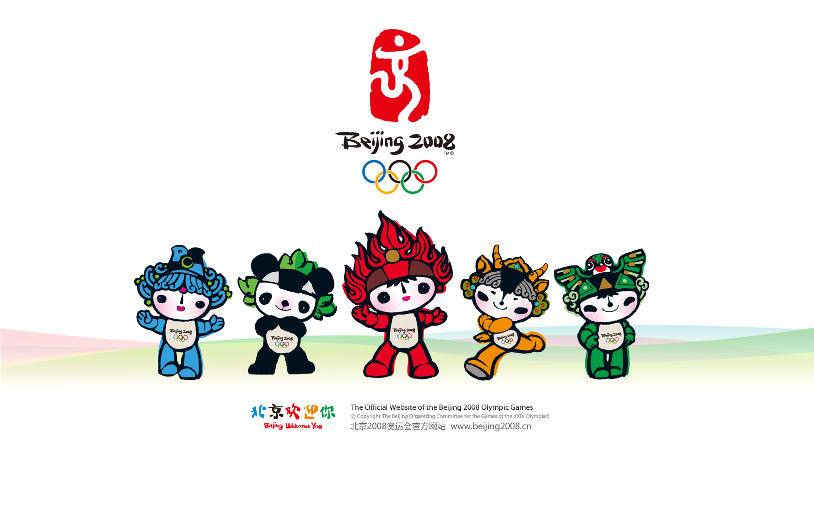
Esa imagen se construyó a través de una exhibición monumental de infraestructura, organización y simbolismo. El lema "One World, One Dream", el Estadio Nacional conocido como el Nido de Pájaro, la ceremonia inaugural y la escala misma del evento proyectaron una China moderna, eficiente y tecnológicamente sofisticada. Al mismo tiempo, los Juegos permitieron mostrar al país como un centro de interacción global, abierto a empresas multinacionales, expertos extranjeros y grandes flujos de inversión, cultura y deporte. Pekín no solo quería impresionar al exterior, sino también reforzar internamente la idea de que China había dejado atrás su antigua marginalidad.
Zhongying · 2008Sin embargo, esa puesta en escena también reveló los límites del soft power cuando la imagen proyectada entra en tensión con lo que se busca controlar u ocultar. Mientras el gobierno chino defendía los Juegos como una oportunidad para mejorar su relación con el mundo, aumentaban las críticas por derechos humanos, censura, restricciones a la protesta y represión en regiones como el Tíbet. La imagen de apertura que China quería proyectar convivió con la percepción de un Estado que seguía dependiendo de un control político muy estricto para sostener esa narrativa.
Wang · 2024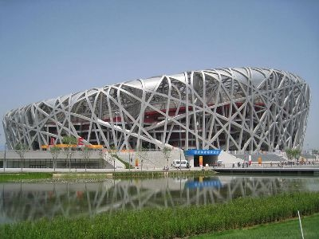
Pekín 2008 dejó claro que el poder olímpico del siglo XXI ya no consiste solamente en proyectar una imagen atractiva, sino en disputar qué modelo de modernidad y liderazgo puede imponerse en la escena internacional.
China impresionó al mundo, amplió su prestigio especialmente en Asia y en el mundo en desarrollo, y convirtió el olimpismo en una demostración de escala global de su nuevo estatus. Pero estos Juegos se entienden mejor no solo como un ejercicio de proyección simbólica, sino como una de las expresiones más ambiciosas y controvertidas del soft power contemporáneo.
Grandeza y Contradicción
2014
Si Pekín 2008 había mostrado el soft power como una demostración de llegada, Sochi 2014 lo presentó como una exhibición de prestigio estatal y liderazgo político. Para Vladimir Putin, los Juegos no eran simplemente un evento deportivo, sino una oportunidad para reafirmar el lugar de Rusia en el escenario internacional. La enorme inversión, la construcción de infraestructura a gran escala y la implicación directa del presidente en la candidatura y en la organización del evento buscaban proyectar la imagen de un país moderno, eficiente y nuevamente central en la política mundial.
Paullier · 2014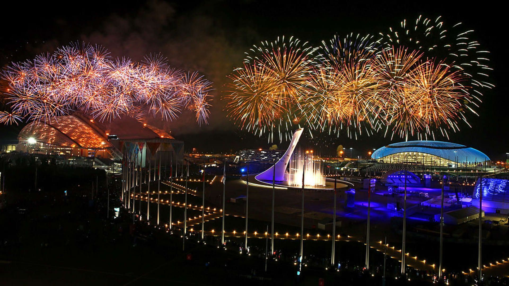
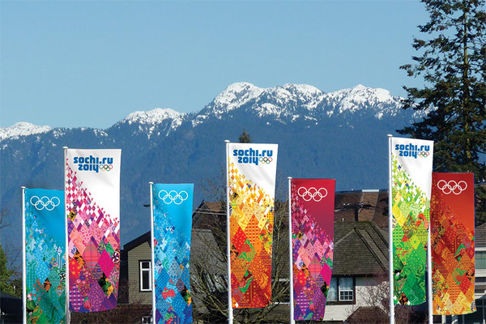
Esa narrativa también se construyó a través del espectáculo. La ceremonia de apertura ofreció una representación monumental de la historia rusa, combinando referencias culturales, literatura, ballet y símbolos imperiales y soviéticos en una puesta en escena diseñada para impresionar a la audiencia global. Con este despliegue, Rusia intentaba presentarse como una civilización histórica, culturalmente sofisticada y capaz de producir un espectáculo de escala mundial. Sin embargo, el brillo de esa escenografía convivía con críticas sobre problemas logísticos, costos excesivos y la percepción de que el evento buscaba compensar con simbolismo algunas debilidades estructurales del país.
Collins · 2014Las controversias políticas ampliaron aún más esas tensiones. La aprobación de la ley contra la llamada propaganda homosexual poco antes de los Juegos situó a Sochi en el centro de un debate internacional sobre derechos LGBT. La ambigüedad de la legislación generó preocupación porque podía permitir discriminación o persecución tanto de ciudadanos rusos como de visitantes extranjeros. De esta manera, mientras el gobierno ruso insistía en que los Juegos estaban abiertos a todos los participantes, el mensaje político transmitía una identidad nacional basada en valores conservadores y en una fuerte afirmación del control estatal.
Chun · 2013
Sochi 2014 mostró una forma ambigua de soft power en la que el espectáculo y la grandeza cultural buscaban seducir a la audiencia global mientras crecían las críticas relacionadas con autoritarismo y exclusión.
El olimpismo en Sochi no solo sirvió para proyectar la imagen del Estado ruso, sino también para evidenciar las tensiones entre esa imagen y los valores universales que los propios Juegos afirman representar. Una contradicción que, lejos de ser excepcional, se convertiría en una constante del poder olímpico en el siglo XXI.
La Ciudad Como Escenario
2024
Más de un siglo después de haber sido sede por última vez, París utilizó los Juegos Olímpicos de 2024 para reafirmar su posición como una de las grandes capitales globales. El evento fue concebido como una plataforma de image branding: una oportunidad para proyectar la identidad cultural, histórica y turística de la ciudad ante una audiencia mundial. La ceremonia inaugural, realizada por primera vez fuera de un estadio con atletas desfilando por el río Sena mientras monumentos emblemáticos servían de telón de fondo, buscó convertir a la propia ciudad en el escenario central del espectáculo olímpico.
Whigham · 2024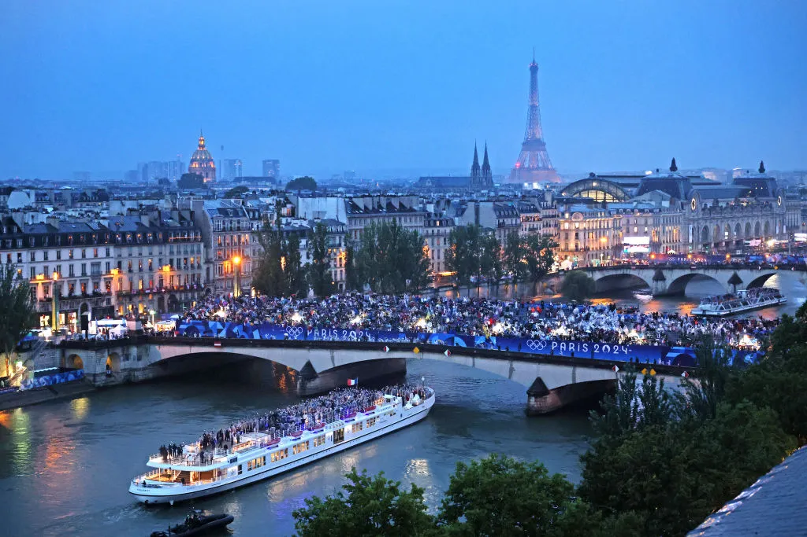
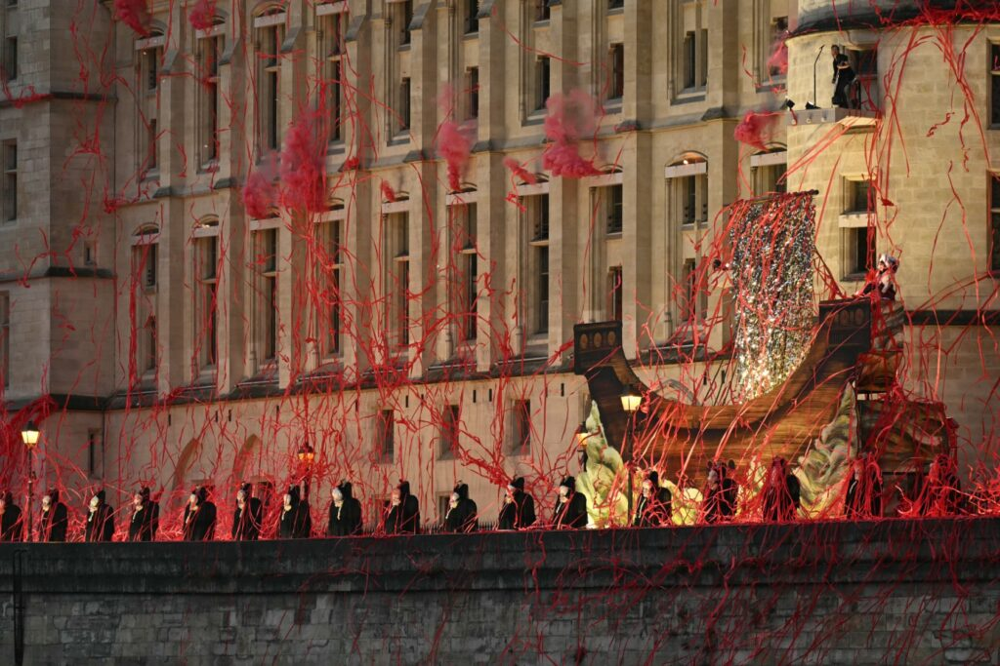
El impacto mediático fue inmediato: la ceremonia fue una de las aperturas olímpicas más vistas desde Londres 2012. Sin embargo, algunos momentos del espectáculo generaron controversia. Una escena con bailarines y drag queens que algunos grupos interpretaron como una referencia a la Última Cena provocó críticas de sectores religiosos. La aparición teatral de María Antonieta sosteniendo su propia cabeza desde una ventana de la Conciergerie también generó debate. Los organizadores respondieron que el objetivo era celebrar valores republicanos como la inclusión, la diversidad y la libertad.
Le Monde · 2024Esta estrategia se complementó con un fuerte énfasis en sostenibilidad y legado. Los organizadores apostaron por reutilizar infraestructuras existentes y limitar la construcción de nuevos estadios, con el objetivo de reducir la huella ambiental del evento y evitar algunos de los problemas urbanos que habían generado ediciones anteriores. Con ello, París intentó presentarse como un modelo distinto para los Juegos Olímpicos del futuro, más eficiente en el uso de recursos y alineado con las crecientes demandas internacionales de responsabilidad ambiental.
Özyeşil y Tembelo · 2025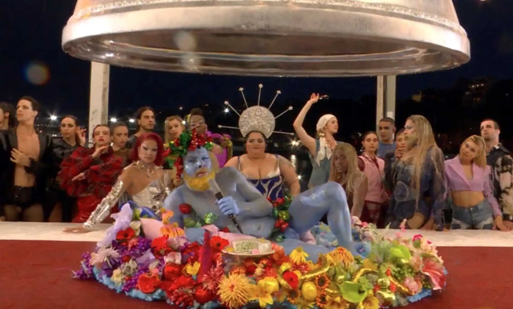
París 2024 refleja una nueva etapa en la evolución del poder olímpico: los Juegos como plataforma para proyectar valores de sostenibilidad, innovación urbana y cooperación global.
Sin embargo, el caso de París demuestra que incluso estas nuevas narrativas siguen enfrentando el mismo desafío histórico del olimpismo: la distancia entre la imagen cuidadosamente construida para el mundo y las tensiones culturales, políticas y sociales que inevitablemente emergen detrás del espectáculo.
Conclusión
A lo largo de su historia moderna, los Juegos Olímpicos han demostrado que el deporte nunca ha sido completamente neutral.
Más allá de la competencia atlética, los Juegos se han convertido en escenarios privilegiados para la proyección política, cultural y simbólica de los Estados. Desde Berlín 1936 hasta Pekín 2008, pasando por Sochi 2014 y París 2024, cada edición muestra cómo los países anfitriones utilizan el evento para construir narrativas sobre sí mismos, proyectar una imagen específica ante el mundo y reforzar su posición dentro del sistema internacional.
En ese proceso, el olimpismo ha funcionado primero como una herramienta de propaganda directa y, con el paso del tiempo, como un mecanismo más sofisticado de soft power. Los gobiernos han comprendido que organizar los Juegos permite influir en la percepción global mediante símbolos, arquitectura, ceremonias y grandes espectáculos mediáticos. A través de estos elementos se busca mostrar modernidad, estabilidad, desarrollo económico o liderazgo cultural, convirtiendo al evento en una vitrina global de prestigio nacional.
Sin embargo, los casos analizados también revelan que esta estrategia nunca está completamente bajo control del país anfitrión. La misma visibilidad que permite proyectar una imagen positiva también expone tensiones internas, controversias políticas y críticas internacionales. Los Juegos pueden fortalecer el prestigio de un Estado, pero también amplifican debates sobre derechos humanos, identidad cultural, autoritarismo, sostenibilidad o desigualdad. De esta manera, el olimpismo funciona simultáneamente como plataforma de promoción y como espacio de escrutinio global.
Más que simples celebraciones deportivas, los Juegos Olímpicos se han consolidado como un escenario donde se negocian narrativas de poder, legitimidad e identidad nacional.
Cada edición refleja las aspiraciones del país anfitrión, pero también las contradicciones que acompañan a esas aspiraciones. En última instancia, el olimpismo revela que el deporte, lejos de estar separado de la política, se ha convertido en uno de los lenguajes más visibles y eficaces a través de los cuales los Estados intentan contarle al mundo quiénes son y qué lugar aspiran a ocupar en él.
Referencias